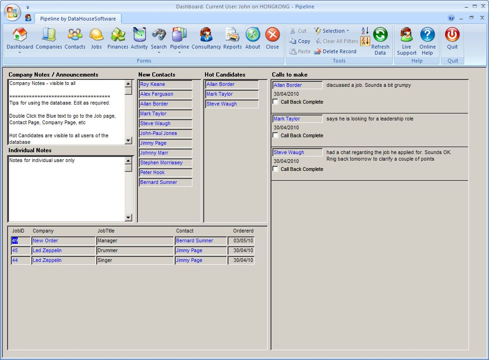

Pipeline
Pipeline is a multi user Recruitment Database designed to run your recruitment consultancy business.
Pipeline is completely free.
Pipeline is designed as a serious business tool. It runs on MS Windows, ansd integrates tightly with Outlook. It is a Client / Server application, not a browser based one. The client application is installed on your PC, the Server component can be a data file on your laptop, a SQL Server Database on your corporate server, or hosted by DataHouseSoftware in the Cloud.
Pipeline is cost effective, fast to set up and simple to use. Pipeline manages contacts, candidates and jobs, as you would expect any good recruitment software to do, but there are several key points that make Pipeline stand out from the crowd
- Tight integration with Outlook for email and calendar functions
- Send CVs to clients direct from database
- Automatically send email and calendar appointment upon confirmation of interview date / time
- Send permanent and temp / contract invoices by email direct from database
- Comprehensive search of
- Candidate’s keywords on database
- Within CVs and emails
- LinkedIn contacts
- Direct marketing to clients and / or candidates – send multiple individually addressed emails or SMS at the touch of a button
- Send SMS direct from database
- Launch VOIP call by double clicking a phone number
- Electronic whiteboard – instantly review sales funnel at the touch of a button
- Comprehensive reports on fees, activity, wages, etc
- Live support: invite our support staff to connect to your PC for demonstrations / troubleshooting
Pipeline can connect to a data file on your LAN, or to a database on a SQL Server which can be hosted on your server or in our data centre.

Over the past 20 years I have had working experience with many software packages and can confirm that Pipeline more than exceeds my expectation. DataHouseSoftware are extremely in tune with their clients needs and when refinement of the software is required they are both receptive and responsive, the technical support is second to none. In summary, DataHouseSoftware provide a great initial package that shows intuition and understanding of the clients industry, and remain both approachable and organic with regards to ongoing refinement and development as needs grow and change. They have proved invaluable to our business and I recommend them without hesitation.
Mandy Defty
Operations Manager
Safety Force One
I have been searching for recruitment software for many years that is both simple to use and has the detailed search capability of identifying my clients and candidates in a way that we could design ourselves. Pipeline is the most user friendly, intuitive system I have found in the 12 years I have been in recruitment. It has been designed specifically for the use of the recruiter and not HR in mind. We have found that data entry takes seconds to upload contacts and client details and the keyword search capability is as detailed as you want it to be. The add on features such as the pipeline of interviews and the ability to align candidates up to float into clients allows us to track all of the necessary activity.
I can honestly say that the back end service we have received from DataHouseSoftware has been exceptional and anyone thinking of purchasing new recruitment software to help their business grow then this software is the ideal purchase. There are too many products on the market with all the un-necessary bells and whistles that quite frankly are a waste of time. We want our software to capture the relevant information and allow us to do what we do best in the day, which is talk to our client and candidates, not spending all day working out the database. I would be more than happy for anyone to contact me to discuss the benefits of Pipeline for their business.
Dean Dewhirst
Director
Maven Recruitment
We have recently set up a new specialist consulting firm and elected to utilize Pipeline, following a trial period proposed by John Coote. Having previous experience in the recruitment industry along with professional industry experience has enabled John to understand implicitly, the intricate system we would require to maximize our productivity levels. Pipeline's ability to meet our specific needs superseded our expectations, resulting in a system which we believe gives us an edge over our competitors.
We look forward to John’s continued support during our National growth and development in this challenging market.
Joe McDonnell
Recruitment Consultant
I researched quite a few databases. I was used to working with adapt and voyager. I decided to go with Pipeline as it has been designed especially for recruitment agencies so it has all the day to day functions I was used to plus it helps with the financial side including invoicing and wages. It is very user friendly and it was extremely affordable. If I have had any questions John has always been at the other end of the phone to help.
Heidi Crawford
Director, Crawford Recruitment
After an Australia wide search, for a recruitment database, we decided to purchase Pipeline which we determined would fulfil our business requirements in a cost effective manner. The service we have received from John Coote at Data House Software is second to none. John was able to install the system remotely in the first instance and has continually offered this service for installation of updates. John is easily contacted and offers technical assistance promptly and efficiently. The database itself is user friendly and has been a valuable asset to the recruitment side of our business.
Carmel Murphy
Technical Services, Unidel Group
As the Director of a boutique recruitment agency my point of sale is a personalised and efficient service - this is the service I expect of my suppliers and this is exactly what John at DataHouseSoftware provides. John provides exceptional technical support without the frustration of waiting in a call queue - freeing up my time to concentrate on my business
Leon Edwards
Director, Edwards & Holmes Consulting
Custom Database
Talk to us about developing a database application to suit your business